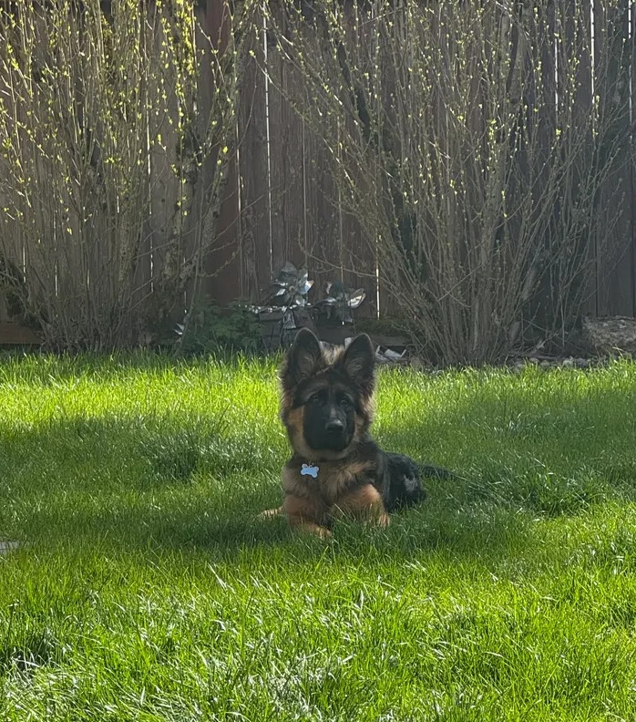

Early validation in Greater Seattle
The right care should not be guesswork.
Maxi is an early-stage pet-care company for pet parents and care providers who want care to feel safer, fairer, and more thoughtful from the start.
Better-fit pet care, built from both sides.
Why Maxi started
Pet care often asks both sides to make high-trust decisions with limited context.
Pet parents want confidence that their pets will be safe, comfortable, and understood.
Care providers want clear expectations, the right care setting, and a fair way to be understood when care is harder than it looks.
Maxi starts from that shared tension.
Have you ever wondered whether a care setting truly suits your pet?
Have you ever cared for a dog whose needs were greater than expected?
Built from both sides
Maxi began with my experience on both sides of pet care—as a pet parent and as a sitter.
My research background is in statistics and machine learning, especially methods for understanding behavior, uncertainty, and decisions over time. Maxi brings these worlds together with a simple goal: make pet care feel more grounded, thoughtful, and fair.
Hans Hao recently joined as co-founder and platform lead, bringing experience in solution architecture and production computing systems.
Yiliu Wang — Pet-care operator. ML scientist.
Hans Hao — Solution architect. Platform lead.

Interested in more thoughtful pet care in Greater Seattle?
Maxi is in early validation. If you are a pet parent or pet-care provider who cares about safer, fairer, and more thoughtful care, we would love to hear from you.